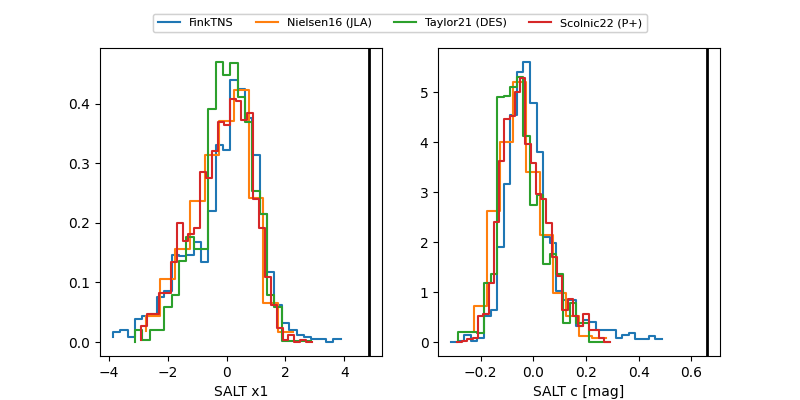

FINK: ZTF25abogteg
Lasair: ZTF25abogteg
ALeRCE: ZTF25abogteg
TNS: 2025wug
YSE: 2025wug
ZTF25abogteg (ztf,fink)
2025wug (tns,yse)
ATLAS25kye (atlas)
PS25hlq (panstarrs)
equatorial (ra, dec) = (7.8422,+30.78986)
galactic (l, b) = (117.8558,-31.88400)

last atlasc=19.12, atlaso=18.86, ztfg=19.45, ztfr=18.81
3 atlasc, 3 atlaso, 4 ztfg, 4 ztfr detections